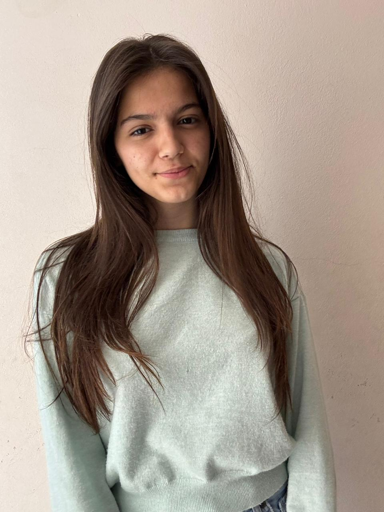
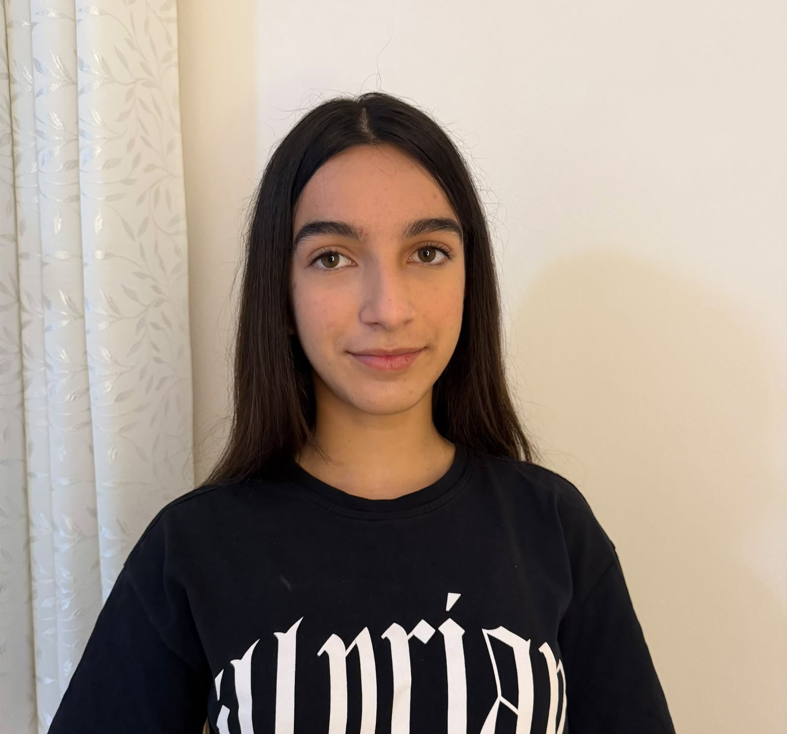

Krenar Dunga
Gjimnazi “Ibrahim Rugova”
President Lokal
Zëri i nxënësve, forca e ndryshimit. Një rrjet që bashkon 24 shkolla për lidership, përfaqësim dhe qytetari aktive.
Shkolla pjesëmarrëse
Nxënës të përfaqësuar
Rrjet i bashkuar
Rrjeti i Qeverive të Nxënësve – ZVA Kamëz bashkon përfaqësuesit e nxënësve nga shkollat pjesëmarrëse për të nxitur bashkëpunimin, përfaqësimin dhe përfshirjen aktive në jetën shkollore.
Të fuqizojmë zërin e nxënësve dhe të krijojmë mundësi për lidership e ndryshim pozitiv.
Një komunitet shkollor ku çdo nxënës ndihet i dëgjuar, i përfaqësuar dhe i vlerësuar.
Përgjegjësi, transparencë, bashkëpunim, respekt dhe qytetari aktive.
Ekipi drejtues që përfaqëson dhe koordinon Rrjetin e Qeverive të Nxënësve – ZVA Kamëz.
President Lokal

Zëvendëspresidente e Parë

Zëvendëspresidente e Dytë
Çdo shkollë përfaqësohet në Rrjetin e Qeverive të Nxënësve përmes presidentit/es së saj.
Përfaqësues/e: Onelja Kurti
Përfaqësues/e: Arolea Rrahmani
Përfaqësues/e: Alesia Sokoli
Përfaqësues/e: Ersa Kaloti
Përfaqësues/e: Reian Tafa
Përfaqësues/e: Klevisa Lasku
Përfaqësues/e: Ajsela Mara
Përfaqësues/e: Arta Kaca
Përfaqësues/e: Ejsi Buci
Përfaqësues/e: Erja Qose
Përfaqësues/e: Dorinalda Dafku
Përfaqësues/e: Fjoldi Barci
Përfaqësues/e: Dajana Pervana
Përfaqësues/e: Armela Hoxha
Përfaqësues/e: Sejda Gjorgji
Përfaqësues/e: Rona Vata
Përfaqësues/e: Santa Adea Musaj
Përfaqësues/e: Gabriela Bekolli
Përfaqësues/e: Ergi Senko
Përfaqësues/e: Elene Ceku
Përfaqësues/e: Era Kadriu
Përfaqësues/e: Krenar Dunga
Përfaqësues/e: Syarta Allaraj
Përfaqësues/e: Elgisa Alkollari
Njoftimet, projektet dhe aktivitetet më të fundit të Rrjetit.
Faqja do të shërbejë si hapësirë zyrtare për publikimin e lajmeve, aktiviteteve dhe dokumenteve.
Rrjeti synon të nxisë bashkëpunimin ndërmjet shkollave dhe qeverive të nxënësve.
Statuti, rregulloret dhe raportet do të publikohen në format të shkarkueshëm.